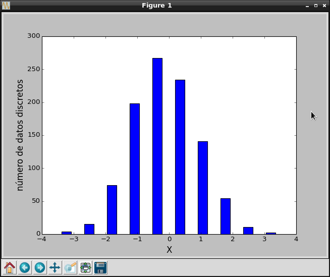

Generación de un histograma de frecuencia con numpy, Scipy y Matplotlib
Posted on dom 11 enero 2015 in Tutorial Python • 1 min read
En el artículo de creación de grafos se muestra como generar un histograma, ahora se mostrará un histograma con datos generados.
Se generarán datos de manera aleatoria, y con ella se generará el histograma con la función scipy.stats.histogram, luego se gráfica el histograma.
A continuación el código del programa:
#!/usr/bin/env python3
# -*- coding: utf-8 -*-
#Se importa numpy como np
import numpy as np
import matplotlib.pyplot as plt
import scipy.stats as st
#Se importa pylab
from pylab import *
#Generación de números aleatorios menores que 1000
x = np.random.randn(1000)
#Generación de los datos del histograma con scipy.stats.
n, low_range, binsize, extrapoints = st.histogram(x)
#define el rango superior
upper_range = low_range+binsize*(len(n)-1)
#Se calcula los intervalos discretos
bins = np.linspace(low_range, upper_range, len(n))
#Generación del gráfico de barras
bar(bins, n, width=0.3, color='blue')
#Etiquetas de los ejes X y Y.
xlabel('X', fontsize=15)
ylabel('número de datos discretos', fontsize=15)
#Se muestra la gráfica.
show()
A continuación se muestra la gráfica:

¡Haz tu donativo! Si te gustó el artículo puedes realizar un donativo con Bitcoin (BTC) usando la billetera digital de tu preferencia a la siguiente dirección: 17MtNybhdkA9GV3UNS6BTwPcuhjXoPrSzV
O Escaneando el código QR desde la billetera: